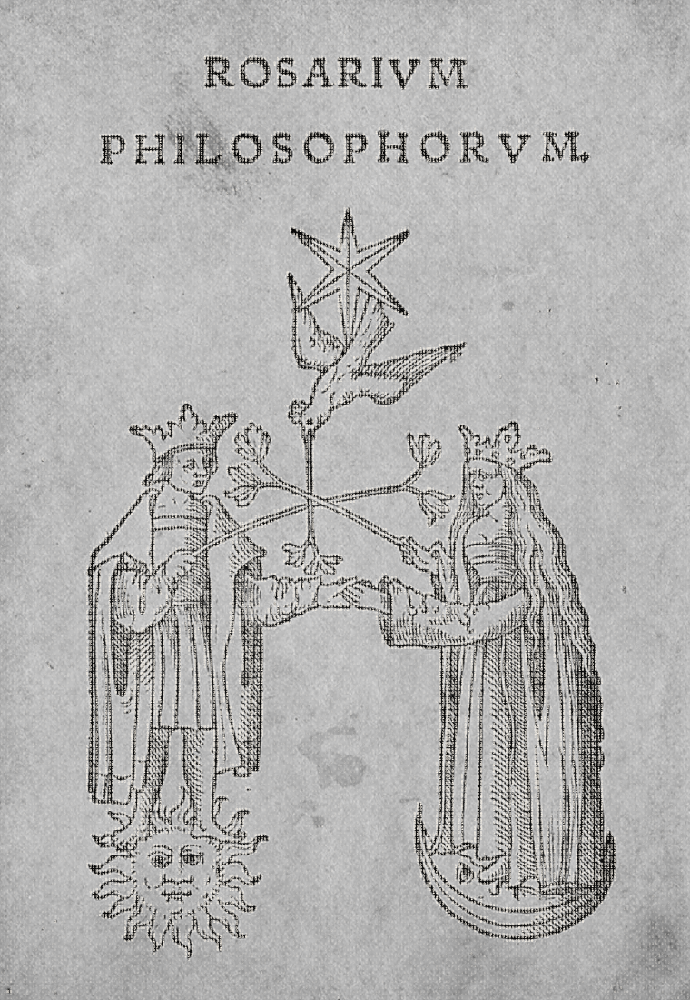

The House
That
Remembers
Joshua Daniels & Piper
SAME PAPER · SAME INK · ONLY CONTENT CHANGESIMG_4092 full bleed. Soft −15% keeps Soft Print's exact language and reduces only opacity: .34 → .289. One law: neither paper nor ink changes at the page turn.

Joshua Daniels & Piper
SAME PAPER · SAME INK · ONLY CONTENT CHANGES